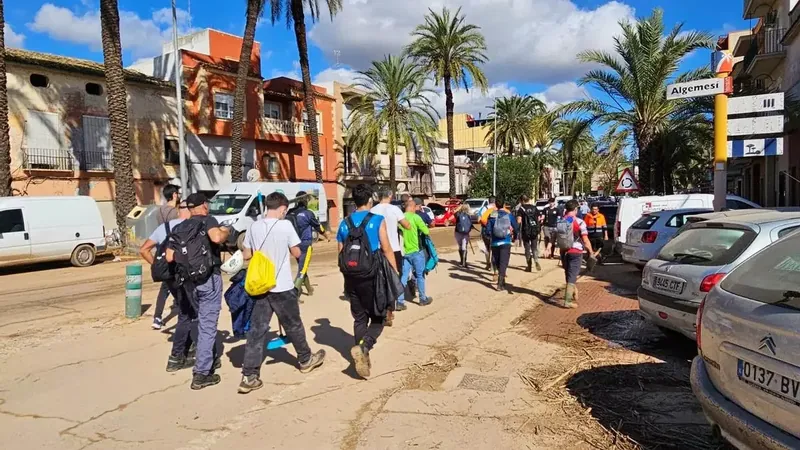
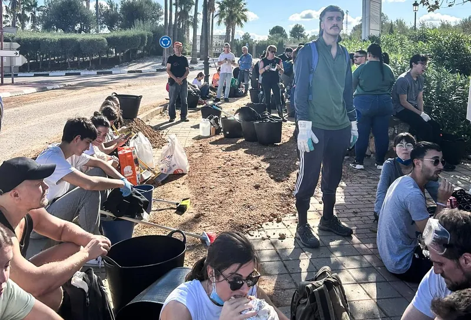
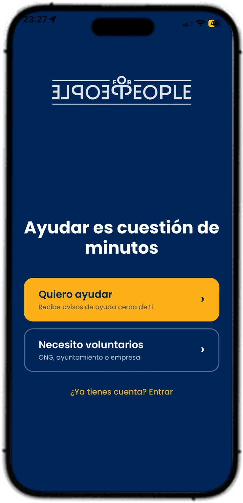
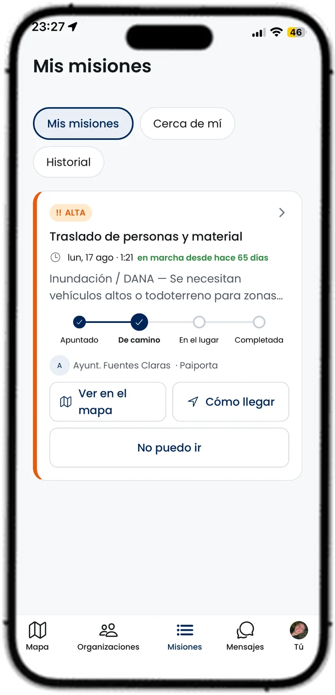
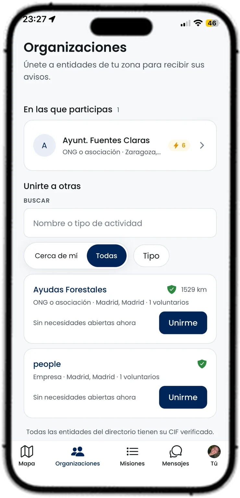
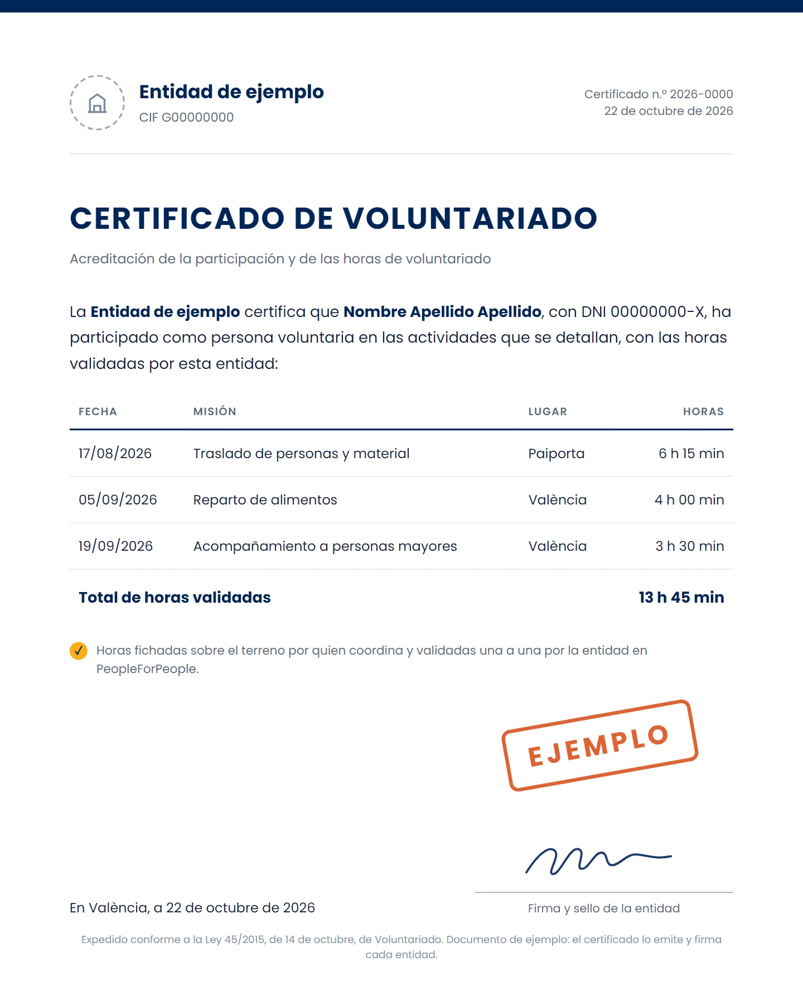

EL PAÍS
«Nadie nos ha dicho qué tenemos que hacer y hemos tenido que autoorganizarnos como hemos podido»
Una voluntaria en Sedaví · Foto: Albert Garcia

DANA, Valencia, 2024 · Foto: [crédito pendiente]
Personas que ayudan. Organizaciones que coordinan.
Conectamos en tiempo real a quien quiere ayudar con ONG, ayuntamientos y empresas que saben dónde hace falta.
PeopleForPeople reúne en un mismo flujo a quien ofrece su tiempo y a las organizaciones que detectan necesidades y coordinan la respuesta.
Conoce la plataforma →Un mapa y una lista con misiones ordenadas por distancia, urgencia y afinidad.
Las organizaciones publican necesidades y encuentran a las personas adecuadas sin perder tiempo.
Plazas, mensajería y estado de cada misión para saber qué está cubierto y qué falta.
El 2 de noviembre de 2024, unas 15.000 personas se presentaron en la Ciudad de las Artes y las Ciencias de Valencia para ayudar. Solo un tercio cupo en los autobuses, y muchos de los que subieron pasaron la mañana parados, sin llegar a nadie.
EL PAÍS
«Nadie nos ha dicho qué tenemos que hacer y hemos tenido que autoorganizarnos como hemos podido»
Una voluntaria en Sedaví · Foto: Albert Garcia

Levante-EMV
«Mano de obra hay de sobra, pero falta organizar»
Voluntarios llegados a Algemesí · Foto: Saray Fajardo

El Salto
«Nos invitaron a irnos a otra zona, Calicanto, porque en el pueblo no éramos útiles»
Voluntarios parados en Chiva, esperando órdenes · Foto: El Salto
Titulares tal como se publicaron.
PeopleForPeople nace de ahí: que quien quiere ayudar sepa adónde ir, cuándo y para qué antes de salir de casa, y que quien coordina sepa con cuántas personas cuenta.
Lee los casos de impacto: la DANA, Filomena, La Palma y las personas mayores →
Las organizaciones verificadas publican misiones. Las personas voluntarias encuentran oportunidades según su cercanía y preferencias y eligen dónde participar.
Regístrate como persona voluntaria o da de alta una organización verificada.
Recibe propuestas por cercanía, urgencia y tus preferencias; sin ruido ni cadenas de mensajes.
Publica, habla con el equipo y sigue las plazas cubiertas de cada misión.



Mientras llega a las tiendas, crea tu cuenta en la web: es la misma con la que entrarás en la app.
Crear mi cuentaSe abre en el navegador, sin instalar nada. Quien coordina entra por lo que espera respuesta —altas, horas por validar, misiones a medio cubrir— y no por una pantalla de estadísticas.
El panel abre por lo que hay que resolver hoy
Participa como persona voluntaria o registra la organización desde la que coordinas.
Ayuda cuando puedas, cerca de donde estés y en las causas que prefieras. Tú decides cada compromiso.
Una misma plataforma, adaptada al trabajo de cada tipo de organización.
Publica misiones, cubre plazas y mantén la comunicación en un solo lugar.
Moviliza a la ciudadanía y coordina misiones locales y respuestas urgentes.
Activa el voluntariado corporativo y mide la participación y el impacto.
Las horas de voluntariado solo valen si se pueden demostrar. Por eso no las apunta nadie a mano: se fichan sobre el terreno y las valida la entidad.
Quien coordina marca en la app que has llegado y, al cerrar la operación, se calculan tus horas. No tienes que apuntar nada.
Alguien de la entidad las confirma o las ajusta. Si cambia algo tiene que decir por qué, y tú lo lees en tu historial.
Las validadas forman tu historial, que puedes imprimir, y son la base del certificado de voluntariado que emite la entidad.

En una plataforma donde la gente dice dónde vive y cuándo está libre, la privacidad no es un extra. Estas reglas las impone el servidor, no solo la pantalla.
Tu ubicación solo sirve para calcular distancias. El mapa enseña cuántas personas hay disponibles en una zona, nunca quién ni dónde.
Si pides ayuda, quien se ofrece ve una zona aproximada de un kilómetro. La dirección exacta solo la recibe la persona que aceptas.
Solo las entidades que ha verificado el equipo de PeopleForPeople pueden publicar misiones y coordinar operaciones.
Para escribirte por privado hace falta un vínculo —que te hayan aceptado en una misión, o que tú hayas aceptado su ayuda— o que aceptes antes su solicitud.
Al darte de alta como voluntario aceptas el acuerdo de incorporación de la Ley 45/2015, y queda constancia de qué versión aceptaste y cuándo. Acuerdo de voluntariado → Política de privacidad →
Regístrate en nuestra lista de espera para acceder a la beta cerrada de la plataforma.